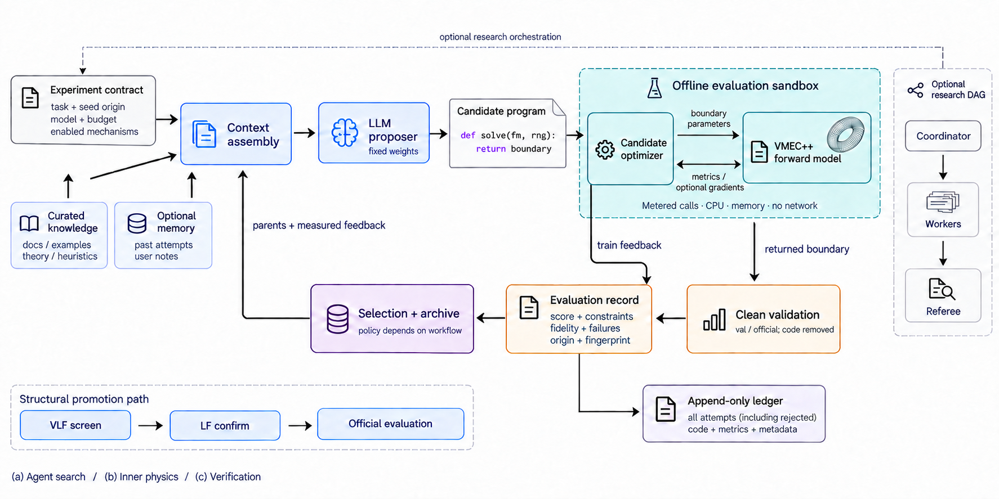
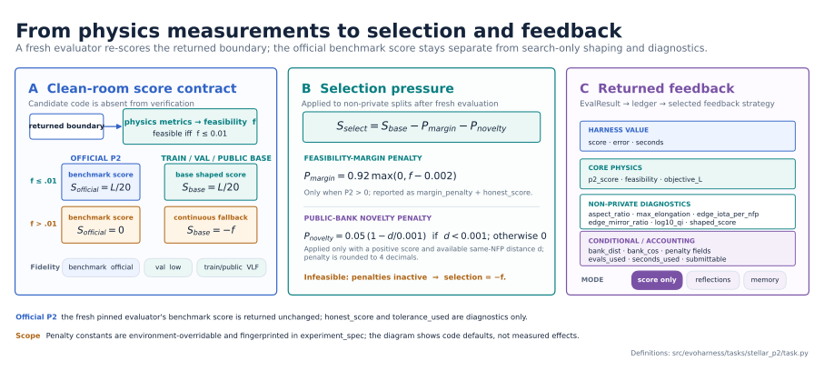
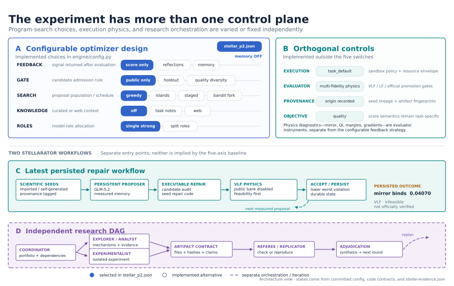
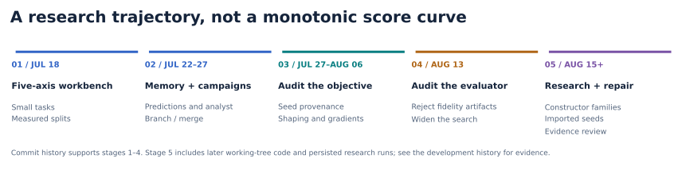
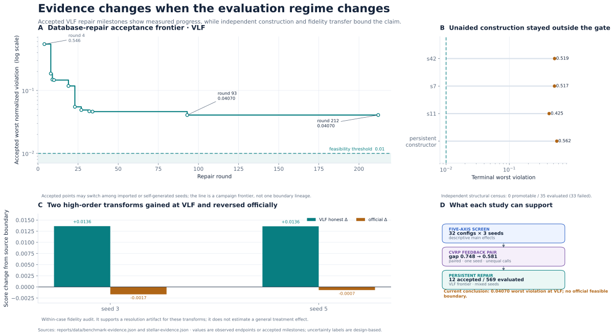
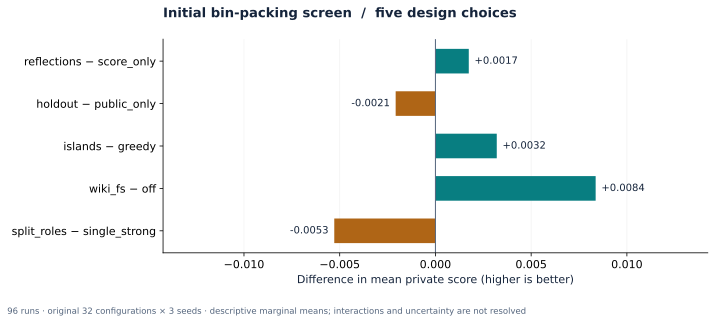

EXECUTABLE DISCOVERY / AN EVOLVING RESEARCH WORKBENCH
What makes an
optimizer discover?
Follow the design choices, inspect the evidence, and separate better search behavior from a verified new artifact. Stellarator design is the main case study.
Committed local snapshot. Raw experiment data is not redistributed.
01 / SYSTEM
Three paths. A common demand for evidence.
Configurable evolution, persistent physics experiments, and a research task DAG have distinct entrypoints. Optional feedback and orchestration features depend on the selected path.

Paper-style system illustration · generation prompts and source references

Scoring definitions from the evaluator implementation. Penalty constants shown are code defaults, not measured effects.
02 / DESIGN SPACE
The choices inside the optimizer

Blue selections come from the committed stellarator config. The latest repair workflow and research DAG use separate entry points. Configuration and evidence data.
These are implemented choices or research directions. Click a card for the mechanism and the evidence needed to judge it.
01 Feedback ↗
Scalar scores, reflections, persistent memory, constraint diagnostics, and optional gradients offer different information to the proposer.
Question: does verified quality improve when inner solver cost is matched? Tool adoption alone is not an outcome.
Feedback implementation02 Selection ↗
Train-greedy, holdout, and quality-diversity gates differ in what survives. Stellarator shaping, official scoring, and provenance checks answer different questions.
Question: is the apparent gain robust to independent fidelity and tolerance accounting?
Quality-diversity gate03 Search ↗
Greedy, islands, staged schedules, and bandit forks control candidate exploration. The historical campaign driver branches and merges entire runs.
Question: do branches explore distinct solution mechanisms, or return to the same physical basin?
Search implementation04 Knowledge + memory ↗
Curated task notes, learned memory, web research, and durable loop state are different forms of context. Web knowledge in the configurable loop requires memory feedback.
Question: does memory prevent repeated failures without preserving stale diagnoses or contaminating comparisons?
Memory implementation05 Models + roles ↗
Writer, refiner and analyst roles operate inside evolution. A separate research coordinator can dispatch dependent explorer, experimentalist and review tasks.
Question: which role improves outcomes under the same total model and solver budget? Historical migrations are not model ablations.
Research executor06 Representation + novelty ↗
Code novelty, constructor-family novelty, coefficient distance and independent origin are separate properties. Repairing an imported research equilibrium retains that provenance.
Question: can a novel and feasible artifact survive fixed-fidelity verification?
Stellarator findings07 Sandbox ↗
The execution policy is explicit: task defaults preserve the original benchmark backends; require_container evaluates Python and C in Docker. Stellarator evaluation always requires its pinned solver image.
Containers have no network, bounded memory, CPU and process counts, and read-only candidate mounts. Local execution is for trusted experiments and has weaker isolation.
Execution policy03 / AUDITABLE RECORD
Browse the local run inventory
| Source / inspect details | Task | Records | End event | Last timestamp |
|---|
No matching records. Clear the filters to inspect the full inventory.
04 / WHAT CHANGED
Progress includes correcting the experiment.


Panels retain separate provenance and score definitions. Accepted repair milestones are selected observations; they are not a complete learning curve.
Earlier benchmarks
The original 96-run bin-packing screen gives a small, inspectable example of architecture choices. Marginal effects summarize this sample, not universal optimizer rankings.

The harder stellarator lesson
The most useful distinction became search progress versus verified artifact quality. Public-seed ancestry, feasibility tolerance, evaluator fidelity and physical constraints all change what a result means.
Memory and gradients can improve the process without escaping its current family of solutions. The latest research direction broadens constructors and seed repair while retaining explicit provenance.
Read the latest state and its limitations →Still under investigation
Independent discovery, technically substantive novelty, better experimental selection, and model-role allocation remain live research questions.
Experiments and falsifiers →